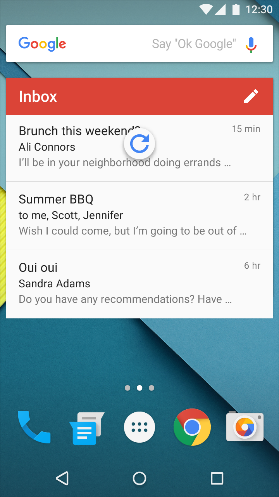
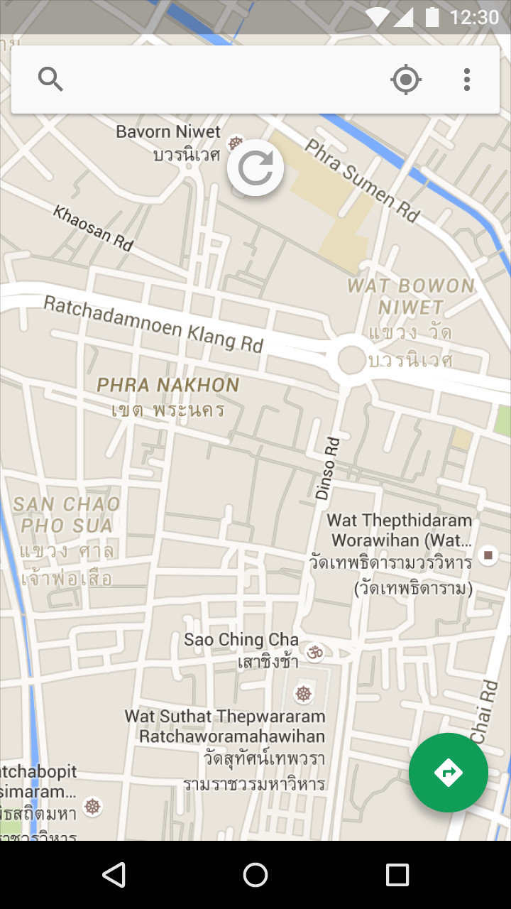

用法
轻扫以刷新是一种轻扫手势，可以用在按最近更新排序的列表、网格列表、以及卡片集的开始位置（Index 0）。
最好把该手势和动态内容一起使用，也就是频繁的从同一位置刷新的内容，用户在使用该手势后看到新内容的几率很高。
刷新指示器
刷新指示器只有在执行刷新手势或操作时才会显示。同步时不会出现刷新指示器。
效果
如果刷新会更新大量内容，那么用户可能不会立刻看到效果。例如，刷新可能进行乱序删除、重新排序、修改、插入项目或仅改变离开屏幕的项目。

轻扫以刷新的动画
轻扫以刷新不应在以下情况下使用：
- 抽屉导航
- 桌面小部件
- 可平移的内容

错
导航抽屉（如果有的话）应该包含导航的目标，而不是动态内容

错
桌面小部件应自动更新内容

错
可平移的内容（例如地图）并没有主要方向或内容的来源方向，用户无法推测出轻扫以刷新手势的方向。